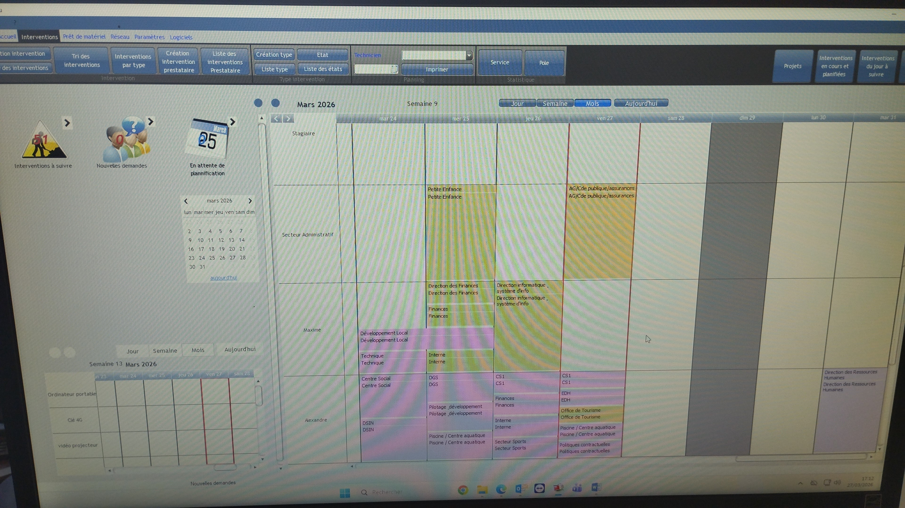
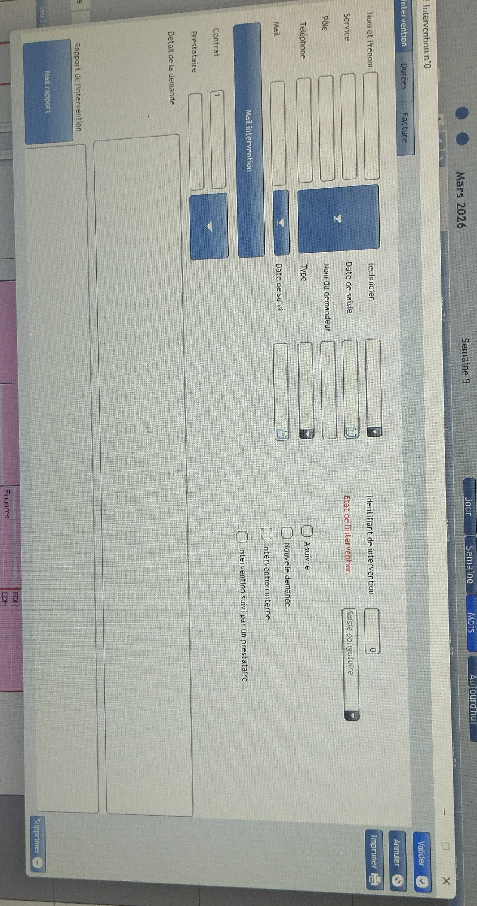

Enzo Whannou — CNED Poitiers | Hyper-V / Linux / Windows Server
Stage de 10 semaines à la CCMSL – Communauté de Communes du Pays de Moret-sur-Loing. Administration systèmes, réseaux, support utilisateurs et projets d'innovation.
// 01 — présentation
Stage effectué au sein du service informatique de la collectivité territoriale. Environnement Windows Server / Hyper-V / Active Directory, avec interventions variées allant de l'administration réseau à l'accompagnement des usagers dans le cadre des missions de conseiller numérique. Le service utilise un logiciel fait maison (appelé « logiciel info ») pour la gestion des tickets et demandes d'intervention (D.I), en remplacement de GLPI.


assets/img/ccmsl.jpg sur GitHub<img src="assets/img/ccmsl.jpg" class="photo-real">
// 02 — réalisations
Déploiement d'un serveur dédié à la nouvelle application locale d'inventaire de la collectivité. Configuration complète, intégration réseau et tests de validation.
InfrastructureDéploiement et test d'une intelligence artificielle locale sur machine virtuelle Hyper-V et sur Windows 11 en environnement de test. Présentation des résultats aux élus de la commune.
Innovation / IAInstallation et configuration de Zabbix pour la supervision de l'infrastructure. Création d'hôtes, définition de déclencheurs et mise en place de tableaux de bord de monitoring.
MonitoringConfiguration de l'adressage IP de plusieurs équipements NAS QNAP à l'aide de QFinder Pro. Intégration dans le plan d'adressage du réseau de la collectivité.
RéseauInstallation et configuration de commutateurs réseau Aruba. Tests de câblage et de connectivité avec un testeur de câbles professionnel (valeur ~3 000 €).
RéseauConfection et remplacement de têtes de câbles Ethernet (RJ45). Réalisation de tirages et tests de continuité sur l'infrastructure filaire de la collectivité.
RéseauMise en œuvre et vérification des procédures de sauvegarde des données. Contrôle de l'intégrité des sauvegardes et documentation des plans de reprise.
InfrastructureCréation, modification et désactivation de comptes utilisateurs dans l'Active Directory. Gestion des groupes, des stratégies de groupe (GPO) et des droits d'accès.
AdministrationAssistance et dépannage à distance des utilisateurs via Bureau à Distance (RDP). Résolution d'incidents logiciels, matériels et réseau en temps réel.
SupportAssemblage de postes informatiques, installation des systèmes d'exploitation, déploiement des logiciels métier et intégration au domaine Active Directory.
SupportRéalisation d'un inventaire du matériel informatique (ordinateurs, périphériques, téléphones). Mise à jour du parc dans le logiciel de gestion interne de la collectivité.
Gestion de parcAdministration et suivi du parc de téléphonie fixe et mobile. Configuration, affectation et maintenance des équipements téléphoniques de la collectivité.
Gestion de parcTraitement des demandes d'intervention (D.I) via le logiciel interne de ticketing de la collectivité. Suivi, priorisation et clôture des tickets utilisateurs.
SupportMissions d'accompagnement au numérique auprès d'enfants, de personnes handicapées, de personnes âgées et d'adultes. Ateliers d'initiation, aide aux démarches en ligne et sensibilisation aux usages numériques responsables.
Médiation numérique// 03 — épreuve E5
| Compétence U4 | Réalisation | Période | Statut |
|---|---|---|---|
| Gestion du patrimoine informatique | Inventaire du parc, gestion du logiciel info (tickets/D.I), gestion parc téléphonique | Oct–Nov 2025 | ✓ OK |
| Réponse aux incidents | Supervision Zabbix, dépannage bureau à distance, support utilisateurs | Nov 2025 | ✓ OK |
| Développement de l'infrastructure | Installation switches Aruba, câblage RJ45, adressage IP QNAP (QFinder Pro) | Oct–Nov 2025 | ✓ OK |
| Sécurité des infrastructures | Gestion AD (comptes & GPO), sauvegarde et vérification intégrité données | Oct–Nov 2025 | ✓ OK |
| Déploiement de services | Déploiement serveur nouvelle application d'inventaire locale | Nov 2025 | ✓ OK |
| Projet d'innovation | IA locale sur VM Hyper-V / Windows 11 (phase labo), présentation aux élus | Nov 2025 | ✓ OK |
| Accompagnement utilisateurs | Montage PC, paramétrage postes, médiation numérique (conseiller numérique) | Oct–Nov 2025 | ✓ OK |
// 04 — fiche activité
Dans le cadre de la mission de supervision de l'infrastructure informatique de la collectivité, j'ai été chargé d'installer et de configurer l'outil de monitoring Zabbix.
Objectifs :
Réalisations :
Compétences mobilisées : Linux, Zabbix, SNMP, supervision réseau, virtualisation Hyper-V
assets/img/zabbix-dashboard.png<img src="assets/img/zabbix-dashboard.png" class="photo-real">
// 06 — à propos de moi
En dehors de l'informatique, voici ce qui me passionne au quotidien.
Découvrir de nouvelles cultures, de nouveaux paysages et de nouvelles cuisines à travers le monde.
Tester de nouvelles recettes, explorer des saveurs du monde entier et cuisiner pour les proches.
La lecture me permet de m'évader et d'apprendre continuellement, que ce soit de la fiction ou du non-fiction.
Grand fan d'animation japonaise, j'apprécie les univers narratifs riches et l'inventivité visuelle des animés.
Le cinéma est pour moi une autre forme d'évasion. J'aime explorer des genres variés, du thriller à la science-fiction.
Les jeux vidéo ont nourri ma curiosité pour l'informatique dès le plus jeune âge. J'aime autant les jeux solo que multijoueur.
💡 Pour ajouter tes propres photos : dépose tes images dans assets/img/ sur GitHub et décommente les balises <img> dans chaque carte.